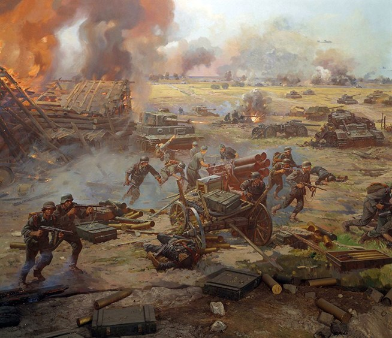

Ку́рская би́тва — стратегическое сражение в Великой Отечественной войне, продолжалась 50 дней, с 5 июля по 23 августа 1943 года. В оборонительных сражениях в июле советские войска отразили наступление немецких войск, сорвав попытку противника окружить и уничтожить части Красной Армии на Курской дуге. В июле-августе советские войска перешли в контрнаступление, разгромили части противника и освободили города Орел (5 августа), Белгород (5 августа), Харьков (23 августа).
В отечественной историографии Курскую битву принято разделять на три части:
Курскую оборонительную операцию (5-12 июля)
Орловскую наступательную операцию (12 июля-18 августа)
Белгородско-Харьковскую наступательную операцию (3-23 августа).
Общий замысел германского командования сводился к тому, чтобы окружить и уничтожить оборонявшиеся в районе Курска войска Центрального и Воронежского фронтов. В случае успеха предполагалось расширить фронт наступления и вернуть стратегическую инициативу. Для реализации своих планов противник сосредоточил ударные группировки, которые насчитывали свыше 900 тысяч человек, около 10 тысяч орудий и минометов, до 2700 танков и штурмовых орудий, около 2050 самолетов. Большие надежды возлагались на новые танки «тигр» и «пантера», штурмовые орудия «Фердинанд», самолеты-истребители «Фокке-Вульф-190-А» и штурмовики «Хейнкель-129».
Советское командование решило сначала обескровить ударные группировки врага в оборонительных сражениях, а затем перейти в контрнаступление. Войска Центрального фронта обороняли северный фас Курского выступа (командующий генерал армии К.К. Рокоссовский), а войска Воронежского фронта (генерал армии Н.Ф. Ватутин) — южный фас. В глубине обороны были развернуты войска Степного фронта (генерал-полковник И.С. Конев). Координацию действий фронтов осуществляли представители Ставки Г.К. Жуков и А.В. Василевский. Начавшаяся битва приняла грандиозный размах и носила напряженный характер. Советские войска приостановили наступление ударных группировок противника, которому удалось лишь на отдельных участках вклиниться в советскую оборону: на Центральном фронте на 10-12 км, на Воронежском фронте до 35 км. Во встречном танковом сражении под Прохоровкой 12 июля 1943 года с обеих сторон одновременно участвовали 1200 танков и самоходных орудий.
Потеряв под Прохоровкой до 400 танков, немцы были вынуждены отказаться от продолжения наступления. 12 июля начался второй этап Курской битвы — контрнаступление советских войск, в котором приняли участие также войска Западного (генерал-полковник В.Д. Соколовский), Брянского (генерал-полковник М.М. Попов) и Юго-Западного (генерал армии Р.Я. Малиновский) фронтов. 5 августа советские войска освободили города Орел и Белгород. Вечером 5 августа в честь этого успеха в Москве впервые за два года войны был дан победный салют. 23 августа был освобожден Харьков. В ходе Курской битвы было разгромлено 30 дивизий противника. Немецкие войска потеряли около 500 тысяч человек, 1500 танков, 3 тысячи орудий и 3700 самолетов.
